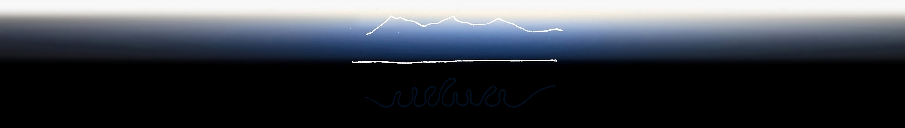
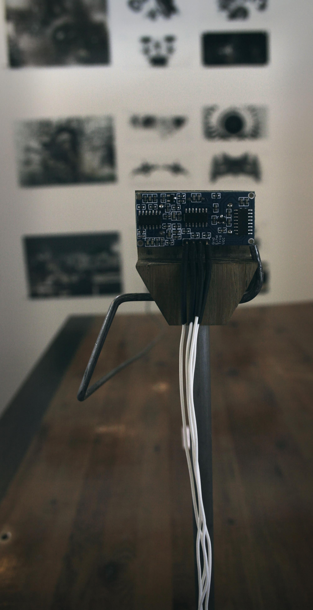

Relief from the Order of Architectural Transparency
via the Monad and Nocturnal:
Allegory of the Lunatic
(Click images to zoom. Click circle to return to top.)
via the Monad and Nocturnal:
Allegory of the Lunatic
(Click images to zoom. Click circle to return to top.)

On the upper level we have a line of variable curvature, without coordinates, a curve of infinite inflection, where inner vectors of concavity mark for each ramification the postiion of individual monads in suspension. But only on the lower level have we coordinates that determine extrema, extrema that define the stability of figures, figures that organize masses, masses that follow an extrinsic vector of gravity or of the greatest incline....
The Fold: Leibniz and the Baroque by Gilles Deleuze

This work is about the undiscerning night: cryptic, soft, and perilous. It is like the Baroque, but discrete.
It is a response to transparency: "that paradigm of total control" championed by René Descartes and later Jeremy Bentham and Le Corbusier.
It is a response to transparency: "that paradigm of total control" championed by René Descartes and later Jeremy Bentham and Le Corbusier.

Transparency was, and continues to be, a primary tool for the measured, logical edifice that denies "the domain of myth, suspicion, tyranny, and above all the irrational."
I am looking for grounds for a more tolerant architecture—one which need not reconcile fiction with fact, one which allows the opaque to preclude totalizing apprehension.
Architectural Uncanny by Anthony Vidler
I am looking for grounds for a more tolerant architecture—one which need not reconcile fiction with fact, one which allows the opaque to preclude totalizing apprehension.
The monad is the autonomy of the inside, an inside without an outside. It has as its correlative the independence of the façade, an outside without an inside... a severing by which each term casts the other forward, a tension by which each fold is pulled into the other.
The Fold by Gilles Deleuze
If the monad makes room for incongruence, the night propegates non-contiguity. Where obscured, all sorts of strange creepers lurk, subconsciously imagined or otherwise: the lunatic in allegory.

The lunatic's den therefore becomes a haven for secondary opportunism exactly because it is relieved from the need to over-perform, or to perform everywhere.


